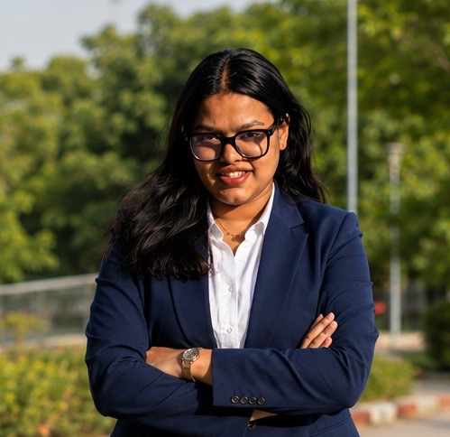
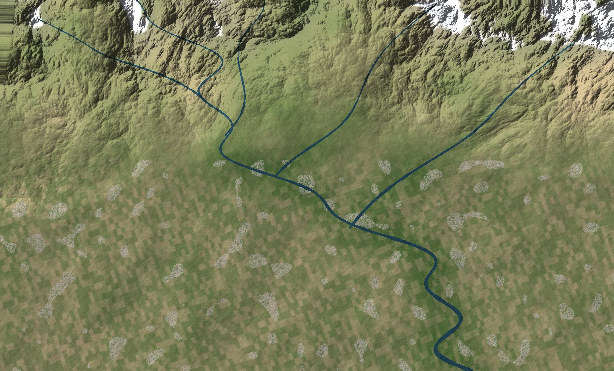

National Workshop on Geospatial Technology for Climate Action, Sustainability and Disaster Risk Reduction
TERI SAS with NRSC, ISRO. Participant, volunteer and rapporteur.
Satellite data is most useful when it reaches disaster and climate planners.
Layer 0128°32′N 77°09′ETERI SAS, New Delhi
PhD scholar in groundwater, remote sensing and machine learning
I am a PhD scholar in Natural and Applied Sciences at the TERI School of Advanced Studies, New Delhi, working where environmental systems, human activity and technology meet. My doctoral research predicts and assesses groundwater contamination across India, bringing together hydrogeochemistry, remote sensing, GIS and multi-source environmental data.
I work on uranium, fluoride and arsenic, using machine learning, deep learning and spatial modelling to understand contamination patterns, what controls them, and where the risk is highest. I'm also interested in population exposure, groundwater governance, climate and cryosphere systems and water security, and I'm always open to new questions, methods and collaborations.
Supervisor: Prof. Chander Kumar Singh. Co-supervisor: Dr. Adwitiya Sinha.

Started teaching Principles of Remote Sensing (NRG169) and Principles of GIS and GNSS (NRG176) in the MSc Geoinformatics programme.
Won First Position (oral presentation) and the Best Paper Award at ICSSR EHP NEXUS 2026, Gautam Buddha University, for my work on uranium risk.
Rapporteur at the National Workshop on Geospatial Technology for Climate Action, Sustainability and Disaster Risk Reduction (TERI SAS with NRSC, ISRO).
Delegate at the World Sustainable Development Summit 2026, Silver Jubilee edition.
Completed my PhD comprehensive examination, and submitted Predicting Uranium Occurrences in Groundwater throughout India to a journal.
Layer 0227°36′N 78°03′E to 28°32′N 77°09′EHathras to New Delhi
Read it like a rock column: the oldest layer at the bottom, the newest on top.
TERI School of Advanced Studies, New Delhi
Development of an Adaptable Machine Learning Based Framework for Multi-Contaminant Prediction
Full-time, registered 1 February 2024. Comprehensive examination completed 28 January 2026. Coursework CGPA 9.0.
Dr. B.R. Ambedkar University, Agra
SandstoneUniversity of Delhi
Clay with mineral grainsDelhi Public School, Aligarh
GravelSt. Francis Inter College, Hathras
BedrockLayer 0322°N 79°EIndia, national scale
My PhD asks how far we can predict groundwater contamination across a country as large and varied as India, and what the predictions mean for the people who drink the water.
Scroll to zoom in. The pixel size steps down through datasets I use, from 111 km down to 30 m.
My thesis, Development of an Adaptable Machine Learning Based Framework for Multi-Contaminant Prediction, builds a national-scale framework for predicting groundwater contamination and assessing its risk.
It brings together groundwater observations and hydrochemistry with remote sensing and GIS layers on climate, hydrology, terrain, soil, geology, land use, human modification and population. The aims run from prediction and risk mapping to checking uncertainty and robustness, understanding environmental controls, estimating exposure, and supporting governance decisions.
Supervisor: Prof. Chander Kumar Singh
Co-supervisor: Dr. Adwitiya Sinha
Element tiles are contaminants (with atomic numbers). Dashed tiles are methods and earlier work.
A national-scale model of where uranium occurs in India's groundwater, built from groundwater observations and environmental predictors and checked against an independent validation dataset. The predictions feed into spatial risk classes, estimates of how many people may be exposed, and governance indicators that show where monitoring and action are most needed.
Native resolutions of some of the datasets in my predictor stacks. Part of the work is bringing them onto one grid without losing a single groundwater observation.


Layer 0428°32′N 77°09′EMSc Geoinformatics, TERI SAS
Course teaching in the MSc Geoinformatics programme at TERI SAS.
| Programme | MSc Geoinformatics, TERI SAS |
| Credits | 4 |
| Contact hours | 60 |
| In the lab | Landsat 8/9 imagery, ERDAS Imagine, image enhancement, urban, vegetation and geomorphology analysis |
| Programme | MSc Geoinformatics, TERI SAS |
| Credits | 4 |
| Contact hours | 60 |
| In the lab | GPS and GNSS, satellite navigation, georeferencing, ArcGIS Pro |

Red, green and blue light, roughly what your eyes would see from orbit. Fields look green, bare soil brown, water dark.
Students learn to switch between band combinations like this in the remote sensing lab. The scene is generated for illustration.

Layer 0528°37′N 77°13′EDelhi and beyond
Postgraduate and undergraduate projects, laid out like a map-sheet index. Filter by theme, then open a sheet to pull out its card.
Layer 0628°32′N 77°09′EJournals
Every paper moves along the same pipeline. Published work sits at the end.
The next stop for the papers on the left.
Mal, S., Agrawal, K., Rani, S. et al. J. Mt. Sci. 20, 3154–3172.
Sanu, S. K., Chandrakanta, Agrawal, K., Sharma, V. R., & Bajaj, A. Journal of Indian Water Works Association, LV(1). ISSN 0970-275X.
Layer 0728°32′N 77°09′EToolkit
A borehole through my toolkit. Each layer has its own legend symbol; untick a layer to fold it away.
Layer 0828°25′N 77°32′ELatest: Gautam Buddha University
Seven presentations since 2022, each badge postmarked with its city and date.
Layer 0928°37′N 77°13′ENew Delhi
Entries from my field notebook, each with one thing I took away.
TERI SAS with NRSC, ISRO. Participant, volunteer and rapporteur.
Satellite data is most useful when it reaches disaster and climate planners.
With the Ostrom Workshop, Indiana University Bloomington and IU India Gateway; Yamuna River field visit with INTACH Delhi.
Water is shared, so its governance has to be shared too.
Delhi Climate Innovation Week, Climate Career & Sustainability Expo, Innovate X Delhi.
Climate ideas need a path from pitch to practice.
Guest lecture by Ms. Violeta Martinkė, Project Development Lead, InSoil.
Soil can store carbon, but scaling it needs careful measurement.
Act4Earth Dialogue, virtual.
Global climate goals depend on countries working together.
Expert talk by Mr. Morten Just Kjølby, Product Portfolio Manager for MIKE+, DHI Denmark, at TERI SAS.
City water systems can be modelled before problems reach the street.
Science Summit 2025.
The ocean is part of the water story too.
Virtual. Designing teaching activities with QGreenland data.
Polar data can be brought into any classroom.
TERI SAS with UNEP, UNESCO and Akashvani.
Resilience starts with communities and ecosystems.
New Delhi. Partnerships for Accelerating Sustainable Development and Climate Solutions.
Partnerships decide how fast climate solutions move.
Lecture by Professor John A. Cherry, Lee Kuan Yew Water Prize recipient.
Groundwater is slow to pollute and slower to clean, so protecting it comes first.
TERI SAS and TERI with the British Council and HSBC Bank.
Every green transition needs people with the right skills.
Layer 1028°33′N 77°20′EAmity University, Noida
Three programmes, three patches. Select a patch to read its certificate details.
10–12 December 2024. TERI SAS in collaboration with IIT BHU, IIT Roorkee, Namami Gange, Hokkaido University, GLP Earth, GLP Japan, Abhipsa Foundation and Kambil.
Layer 1128°36′N 77°10′EWorld Sustainable Development Summit
Recording what was said in high-level sessions, and taking part as a delegate.
| Role | Rapporteur |
| Event | TERI School of Advanced Studies with NRSC, ISRO |
| Date | 16–20 March 2026 |
| Role | Rapporteur |
| Event | World Sustainable Development Summit 2025, TERI |
| Date | 5–7 March 2025 |
Theme: Partnerships for Accelerating Sustainable Development and Climate Solutions
| Role | Rapporteur |
| Event | World Sustainable Development Summit 2025, TERI |
| Date | 5–7 March 2025 |
Theme: Partnerships for Accelerating Sustainable Development and Climate Solutions
| Role | Delegate |
| Event | Taj Palace, Chanakyapuri, New Delhi |
| Date | 25–27 February 2026 |
Theme: Transformations: Vision, Voices, and Values for Sustainable Development and Climate Action
Layer 1228°32′N 77°09′ETERI SAS and University of Delhi
TERI SAS. Sustainable City Design Challenge for students of classes 9–12.
TERI SAS. Evaluated school and undergraduate sustainability proposals, 18–19 November 2025.
Geospatial Innovation Challenge by GeoknoX, TERI SAS, at Aahwaan Fest 2025. GIS, remote sensing, raster analysis and geospatial storytelling.
Layer 1328°25′N 77°32′ELatest: Gautam Buddha University
The newest and biggest at the front of the shelf.
Layer 14Beyond the neatlineOff the map
Where old mapmakers drew sea monsters, I keep my hobbies.
Here be coins, stamps, stories and a badminton racket
Layer 1528°32′N 77°09′EVasant Kunj, New Delhi
Thanks for visiting! If you work on groundwater, remote sensing or anything in between, I'd love to hear from you. I'm open to collaborations.
Kavya
Find me at the Department of Natural & Applied Sciences, TERI School of Advanced Studies, in Vasant Kunj, South West Delhi.